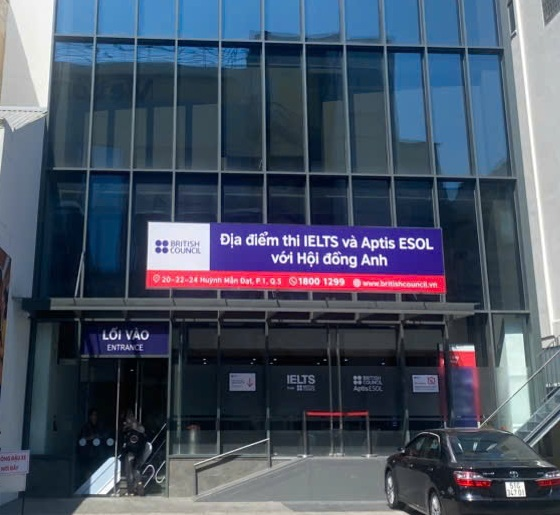

📍 Địa điểm thi tại TP.HCM

Tòa nhà TAF, chụp ngày 20/07/2025
Một trong những địa điểm thi phổ biến của Hội đồng Anh tại TP.HCM:
Địa chỉ: Tòa nhà TAF, Số 20-22-24 Huỳnh Mẫn Đạt, Phường 1, Quận 5.
Lưu ý khi đến thi:
- Nên đến sớm khoảng 30-45 phút để hoàn tất các thủ tục.
- Gửi xe ở các bãi giữ xe gần đó nếu bạn đi xe máy.
- Mang theo đúng giấy tờ tùy thân đã đăng ký.
📌 TRƯỚC KHI ĐI THI
Chuẩn bị giấy tờ đầy đủ và hợp lệ: CMND / CCCD / Hộ chiếu.
🎯 TRONG KHI LÀM BÀI
✅ Nguyên tắc chung
- Luôn giữ bình tĩnh, tự tin, và đọc kỹ yêu cầu đề trước khi làm.
- Quản lý thời gian chặt chẽ, đừng dành quá lâu cho một câu hỏi.
- Nắm vững trình tự bài thi: SPEAKING ➔ LISTENING ➔ GRAMMAR ➔ READING ➔ WRITING.
🎤 Kỹ năng Nói (Speaking)
- Xác định đúng thì của câu hỏi để trả lời.
- Sử dụng công thức 5W1H (What, Where, When, Why, Who, How) để mở rộng câu trả lời một cách tự nhiên.
- Phát âm rõ ràng, duy trì tốc độ nói vừa phải.
- Cố gắng trả lời đủ ý, tránh im lặng quá lâu. Giữ bình tĩnh khi thấy đồng hồ đếm ngược.
🎧 Kỹ năng Nghe (Listening)
- Nếu có thể, đọc trước câu hỏi và các lựa chọn để xác định thông tin cần nghe.
- Nghe kỹ từng chi tiết. Nếu bỏ lỡ một câu, hãy bình tĩnh tập trung vào câu tiếp theo.
- Nghe ít nhất 1 lần, tối đa 2 lần. Không nghe mà chọn sẽ bị 0 điểm câu đó.
- Lưu ý: Câu 14 có thể bị xáo trộn vị trí, câu 15 có thể bị đổi vai người nói.
📖 Kỹ năng Ngữ pháp & Đọc (Grammar & Reading)
- Grammar: Biết bao nhiêu làm bấy nhiêu. Cố gắng hoàn thành tất cả các câu, không bỏ sót.
- Reading:
- Part 1, 2, 3, 5: Tin tưởng vào "key" và phương pháp đã học.
- Part 4: Đọc kỹ để tìm sự liên kết giữa ý kiến và người nói. Trình tự có thể bị xáo trộn.
📝 Kỹ năng Viết (Writing)
- Viết đúng bố cục và yêu cầu của từng phần.
- Tập trung vào ý chính, tránh viết quá dài hoặc lan man.
- Luôn dành thời gian kiểm tra lại lỗi chính tả và ngữ pháp trước khi nhấn "Next".
‼️ LƯU Ý ĐẶC BIỆT
Ngoại trừ Speaking, các kỹ năng còn lại (Listening, Grammar, Reading, Writing) cho phép bạn quay lại kiểm tra các câu trả lời trong cùng một kỹ năng. Tuy nhiên, khi đã chuyển sang kỹ năng tiếp theo, bạn sẽ không thể quay lại kỹ năng trước đó.
Nếu có bất kỳ điều gì không rõ, hãy mạnh dạn hỏi giám thị.